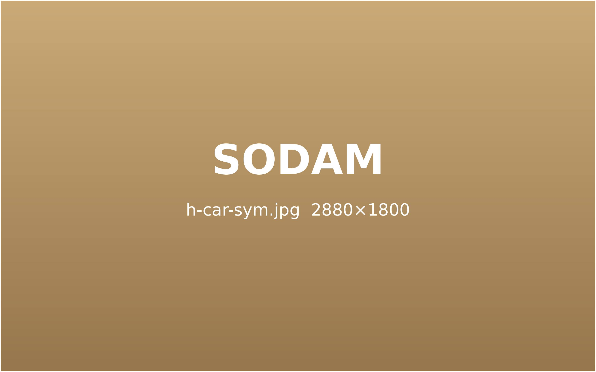
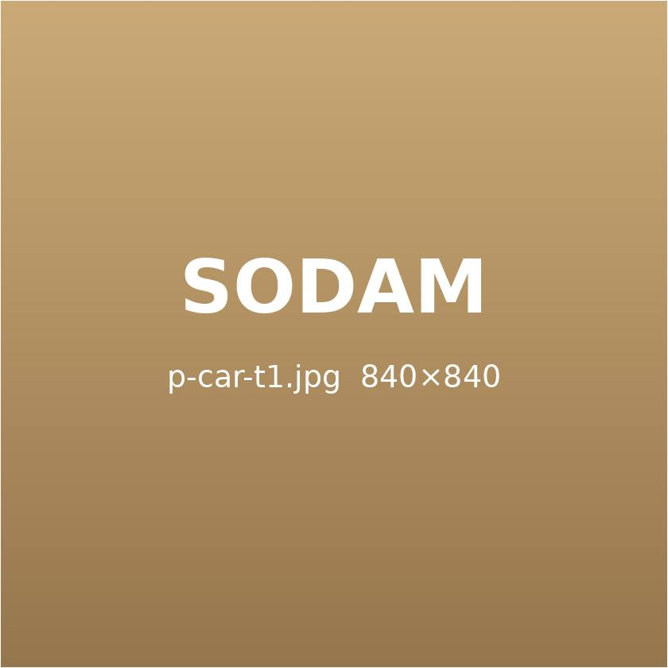
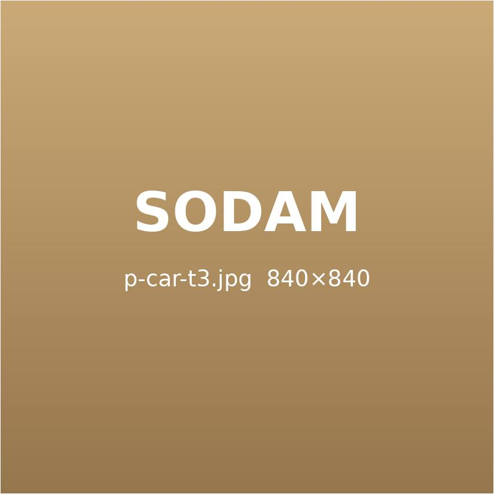
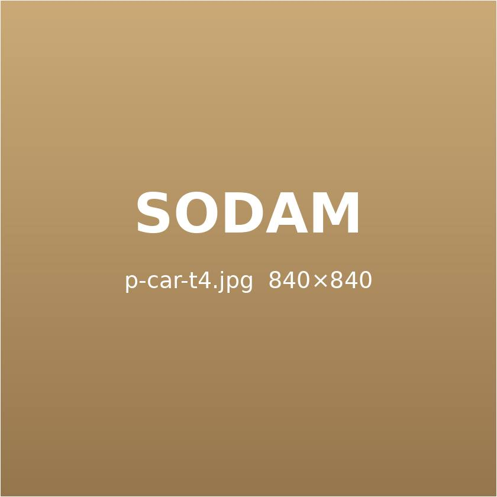
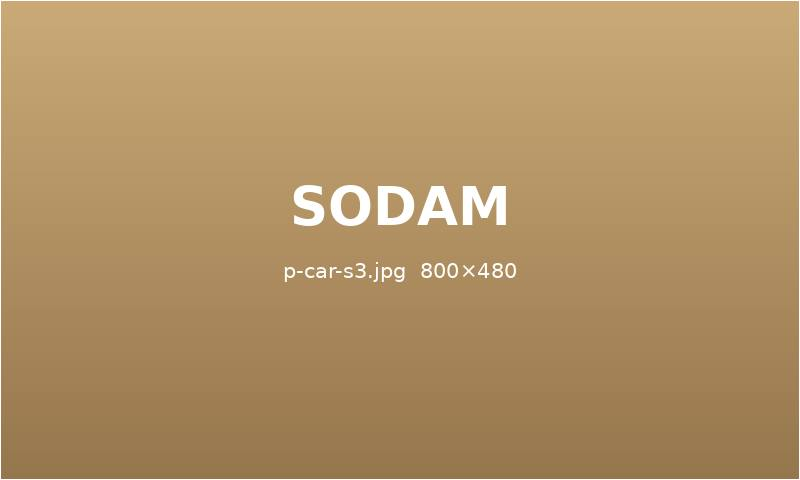

사고는 같아도,
증상은 다릅니다.
충격의 방향, 자세, 체질에 따라 나타나는 후유증은 사람마다 다릅니다.
증상에 맞춰 치료 순서를 정합니다.
이런 증상이 있으신가요?
교통사고 뒤 흔히 나타나는 증상입니다. 해당하는 것이 있다면 초기에 치료를 시작하세요.

- 목을 돌리기 힘들고 뒷목이 당긴다
- 어깨가 무겁고 팔까지 저리다
- 고개를 숙이거나 젖힐 때 통증이 심하다
- 머리가 무겁고 띵한 두통이 계속된다
- 고개를 돌릴 때 어지럽다
- 속이 메스껍고 집중이 어렵다

- 오래 앉아 있으면 허리가 아프다
- 다리로 뻗치는 통증이 있다
- 아침에 허리가 뻣뻣하다

- 손끝이 저리고 감각이 둔하다
- 다리가 붓고 무겁다
- 부딪힌 자리에 멍이 오래간다
소담 증상 맞춤 치료
- 1
정확한 진단
초음파 · 영상 판독으로 손상 부위와 정도를 확인합니다.
- 2
어혈 제거와 염증 차단
약침 · 부항 · 어혈 한약으로 멍과 붓기를 빼냅니다.
- 3
척추 정렬 교정
추나로 충격에 틀어진 정렬을 바로잡습니다.
증상이 다르면,
치료도 달라집니다.
정확한 진단으로 원인을 찾고, 구조를 바로잡아 재발을 막는 네 단계로 치료합니다.
STEP 1
정밀 원인 추적 진단
사고 경위와 충격 방향을 자세히 듣고, 초음파와 영상 자료로 손상 부위를 확인합니다.
초음파영상 판독
STEP 2
어혈 제거와 염증 차단
사고로 생긴 어혈과 염증을 약침 · 부항 · 한약으로 빠르게 가라앉힙니다.
약침부항어혈 한약
STEP 3
구조 교정과 통증 개선
충격으로 틀어진 척추와 골반을 추나로 바로잡아 통증을 줄입니다.
추나전침물리 치료

STEP 4
몸과 마음을 함께
불면 · 불안 같은 사고 후 스트레스까지 함께 관리해 일상으로 돌아가도록 돕습니다.
심신 안정수면 관리